Valley Life
See a quieter side of Belize and experience the rhythm of a community surrounded by farms, hills, roads and river valley.
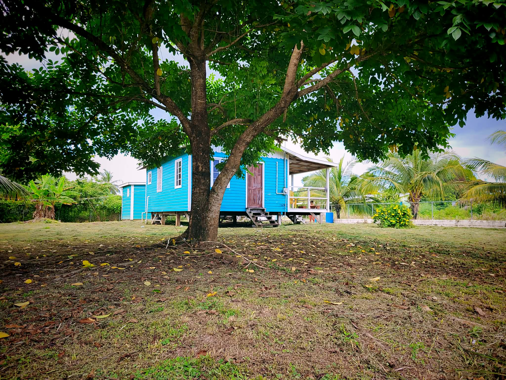
A PLACE TO CALL YOUR OWN
Lee Blue is a newer wooden house in Pomona, Southern Belize, created for travelers who want more than a room for the night.
With a comfortable interior, a large enclosed garden and your own private space, Lee Blue gives you the freedom to experience Belize at your own rhythm.
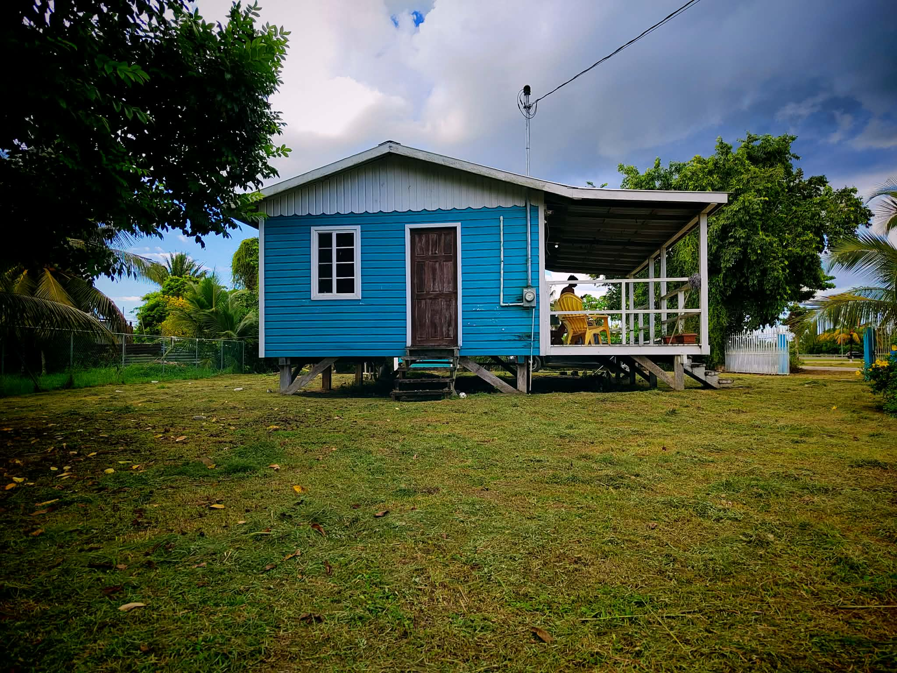
THE HOUSE
Step inside and leave the ordinary holiday rental behind. Lee Blue is simple, fresh and thoughtfully furnished — a comfortable private base for discovering Southern Belize.
And outside, the enclosed garden gives you something that becomes increasingly precious when you travel: space of your own.
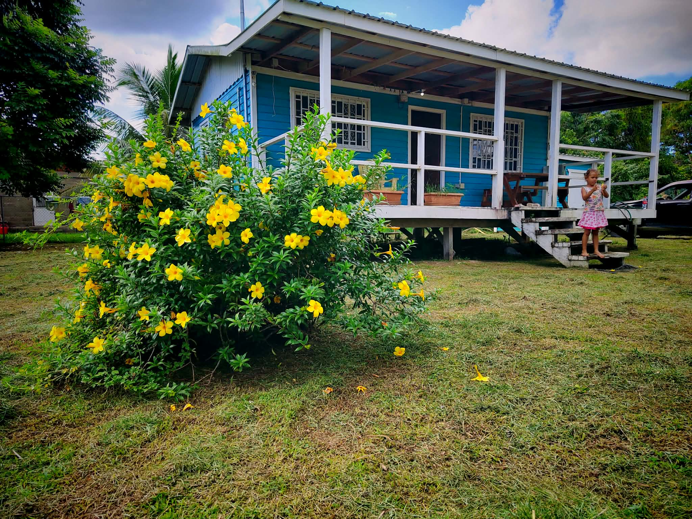
YOUR OWN GREEN SPACE
The garden is part of the experience. Sit outside. Read. Talk. Listen to the birds. Have your morning coffee and simply be where you are.
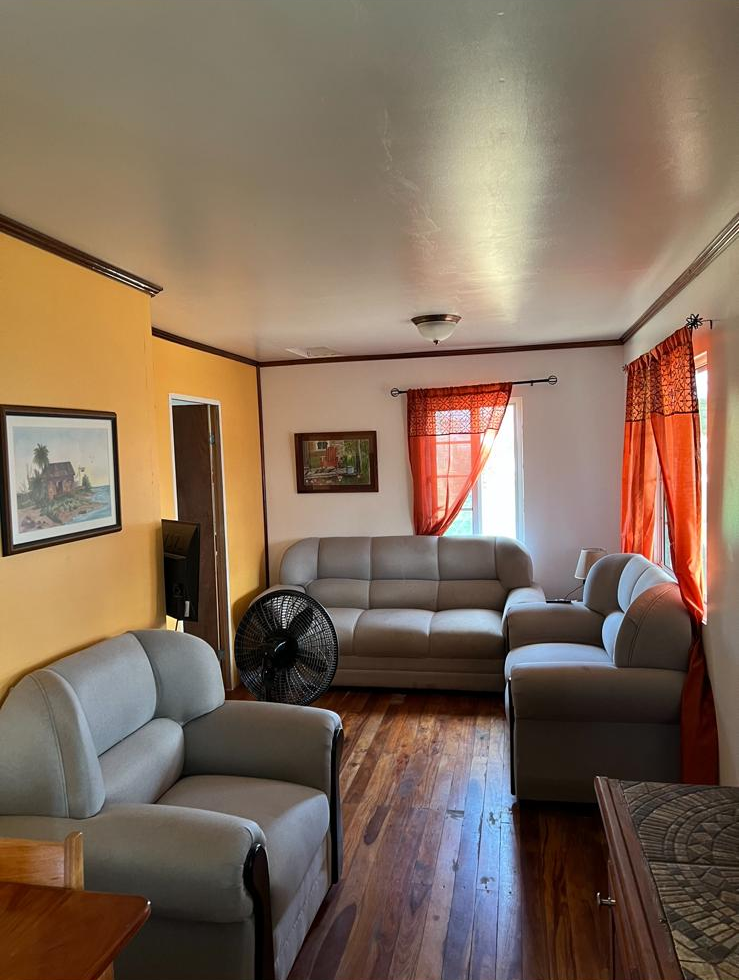
THE PLACE · POMONA
Before Lee Blue was here, Pomona already had a story of its own.
The area was once known as Macaroni Hill, a name that appears in historical records from the late 1800s. The name Pomona began appearing in the early 1900s, connected to the citrus orchards that were beginning to shape the Stann Creek Valley.
In 1913, Alfred E. Vine, manager of the British Honduras Syndicate, named his citrus property here Pomona Holdings. The name stayed — and eventually became the name of the village.
Citrus, agriculture, the Stann Creek River Valley and the people who built their lives here became part of Pomona's identity. The valley was also connected to the early Stann Creek Railway, which reached Pomona in the first decade of the 20th century.
Today, Pomona is not a resort town. It is a place where you can experience another side of Belize — closer to everyday life, surrounded by green hills and the landscape of the North Stann Creek Valley.
POMONA TODAY
Staying in Pomona gives you a different perspective on Southern Belize. The Hummingbird Highway connects the valley with the coast and the interior, while the surrounding landscape opens toward the Maya Mountains.
See a quieter side of Belize and experience the rhythm of a community surrounded by farms, hills, roads and river valley.
Pomona is part of the historic citrus-growing landscape of the Stann Creek Valley — a story that helped shape the region for more than a century.
From Pomona, the road opens toward Hopkins and Dangriga, the Maya Mountains, rainforest adventures and the many cultural experiences of Southern Belize.
Have a coffee. Walk around. Watch the light change over the hills. Talk to people. Let the place become more than a dot on your travel map.
“The best places are not always the ones you came looking for.”
— LEE BLUE · POMONATHE POMONA EXPERIENCE · SOUTHERN BELIZE
Local flavours, familiar faces and little discoveries. Make yourself at home and explore the world just beyond Lee Blue.
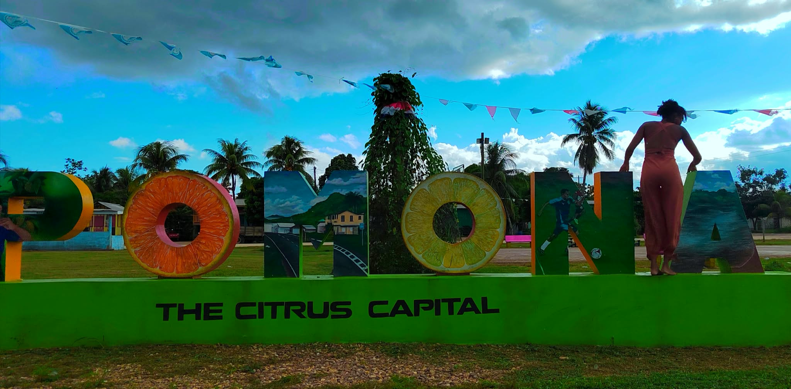
From a relaxed meal to everyday essentials, discover a few useful places around Pomona.
EXPLORE THE AREAA FEW LOCAL FAVOURITES
Little places to eat, shop and experience everyday life in Pomona.
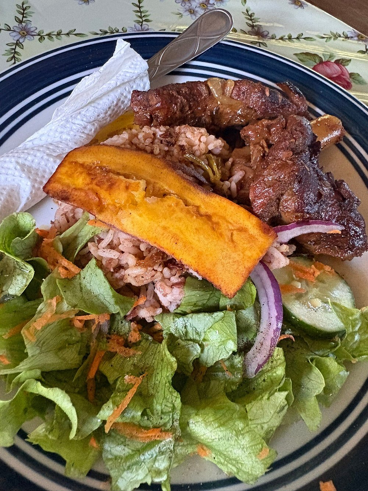
01Enjoy local flavours and a relaxed taste of everyday life in Pomona.
DISCOVER THIS PLACE 02
02
A casual local stop for pizza and an easygoing evening.
DISCOVER PEDRO’S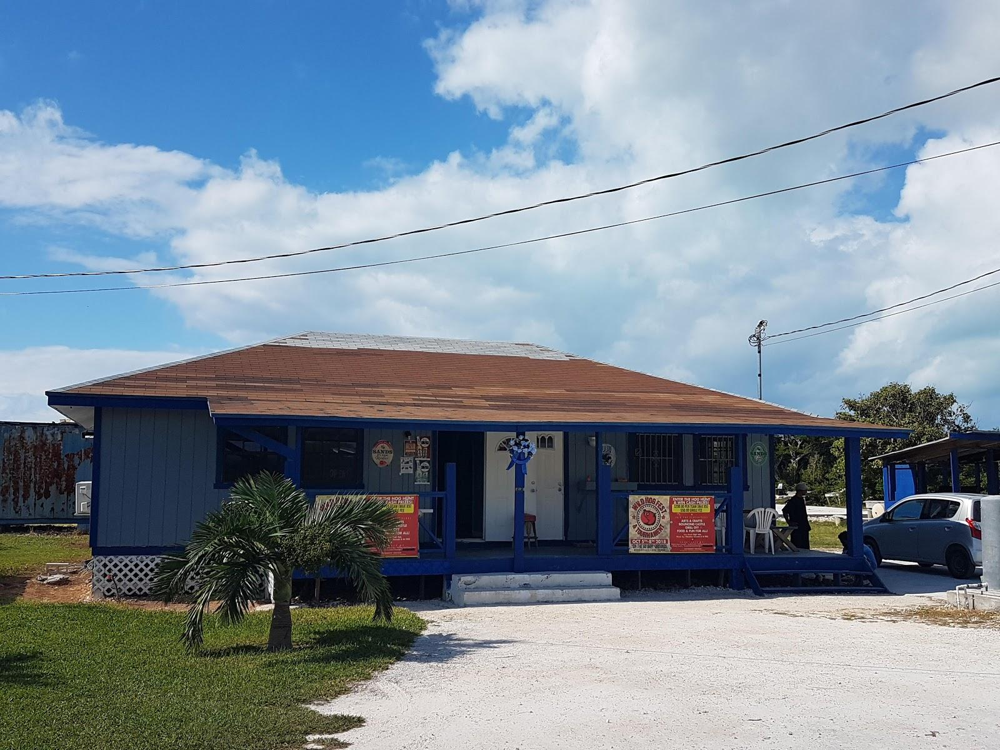
03A local spot for a quick, informal meal in Pomona.
FIND THIS PLACE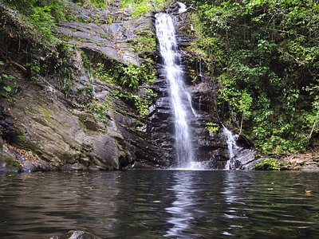
04Explore the lush natural surroundings of Southern Belize. Confirm the exact waterfall location before travelling.
EXPLORE THE AREA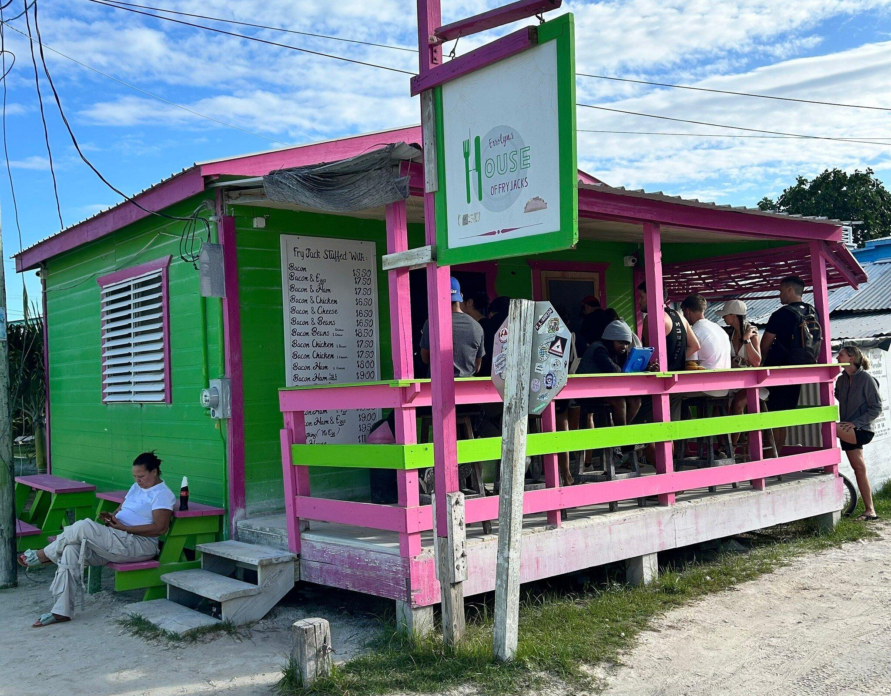
05Another local option for a quick, informal meal.
FIND THIS PLACE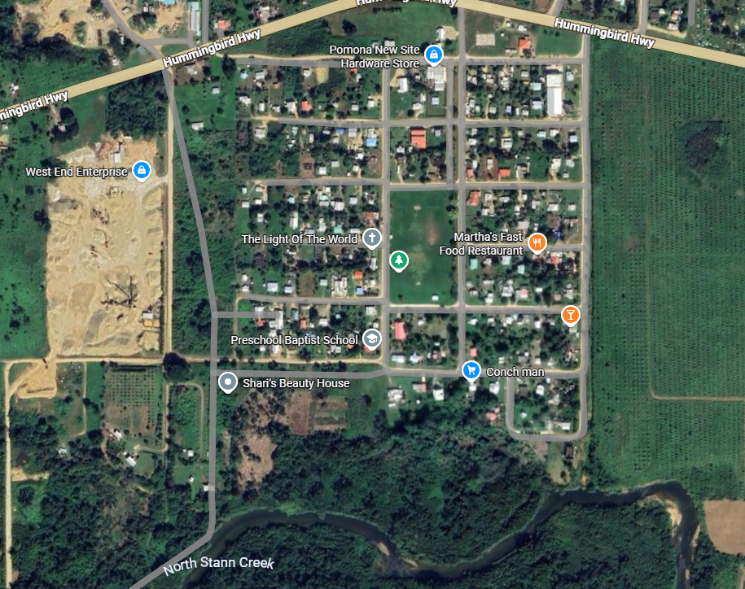
06Use the village map to explore Pomona and plan your local discoveries.
EXPLORE POMONALIFE IN POMONA
You don't have to leave Pomona to have a good day. One of the pleasures of staying at Lee Blue is having a little piece of local life right outside your door.
Ask locally where to find fresh handmade tortillas and other everyday Belizean food. Some of the best travel memories begin with something simple and local.
From small local restaurants and takeaway spots to Belizean favourites, discover the everyday flavours of Pomona and the surrounding community.
Take a walk, greet the neighbours and experience the easy rhythm of a Belizean village. Sometimes the smallest moments become the most memorable.
The Stann Creek Valley is shaped by water and lush tropical landscapes. Discover the natural surroundings of Pomona and ask locally about accessible places to explore.
Say hello, learn about local traditions and enjoy the conversations that make a place memorable. Respectful, everyday encounters can become a special part of your stay.
Walk. Explore. Stop for food. Talk to someone. Sit in the garden at Lee Blue. Sometimes the best part of a Belize trip is simply having nowhere else you need to be.
There is a local bar right across the street from Lee Blue — a simple place to sit down, have a drink and watch village life unfold.
And if you're lucky, you might even catch one of the local pool tournaments.
FROM LEE BLUE
Lee Blue gives you a peaceful base from which to discover one of the most culturally and naturally diverse parts of Belize.
A coastal Garifuna community known for its music, drumming, food, culture and relaxed Caribbean atmosphere.
One of the cultural heartlands of Garifuna life in Belize, with deep roots in music, food, traditions and community.
Rainforest, rivers, mountains and some of Southern Belize's most spectacular natural landscapes.
Explore the Cockscomb Basin Wildlife Sanctuary, famous for its jaguar habitat and extraordinary rainforest.
Discover living Maya culture, local traditions and the stories of communities connected to the Maya Mountains.
Taste cacao and discover traditional Maya chocolate-making in the communities surrounding the Maya Mountains.
A LITTLE EXTRA FROM US
Every Lee Blue guest receives a special BLINKITA Guest Bonus that can be used toward selected experiences during your stay.
Experience cacao as more than a drink — through ceremony, presence and connection.
Experience a traditional Maya-inspired approach to bodywork and abdominal wellbeing.
Discover your personal connection to the traditional Maya calendar through a personal reading.
Experience Aqua Lemu Reiki first-hand during your stay in Belize.
LEE BLUE
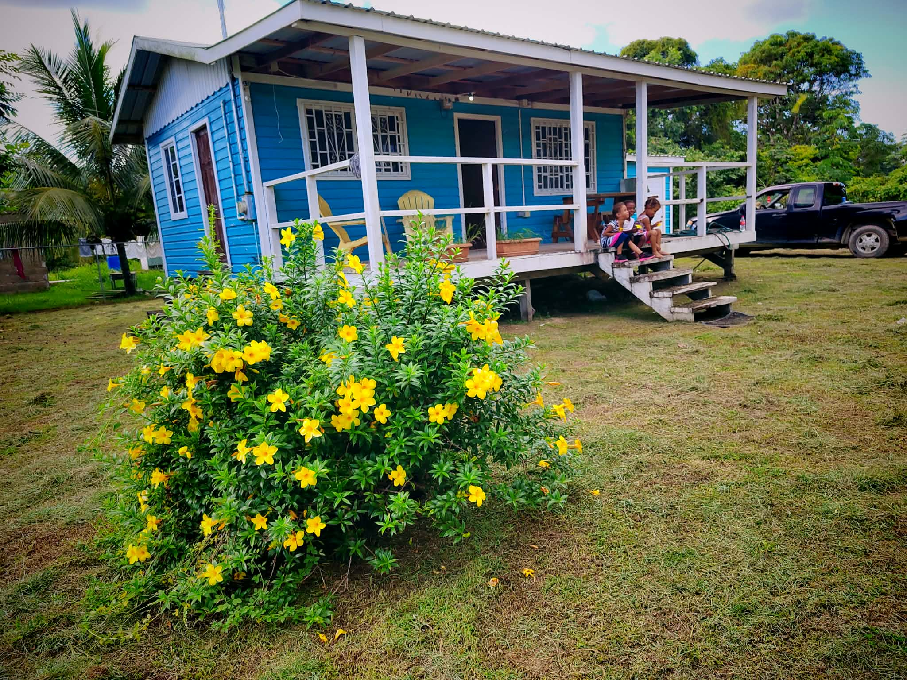
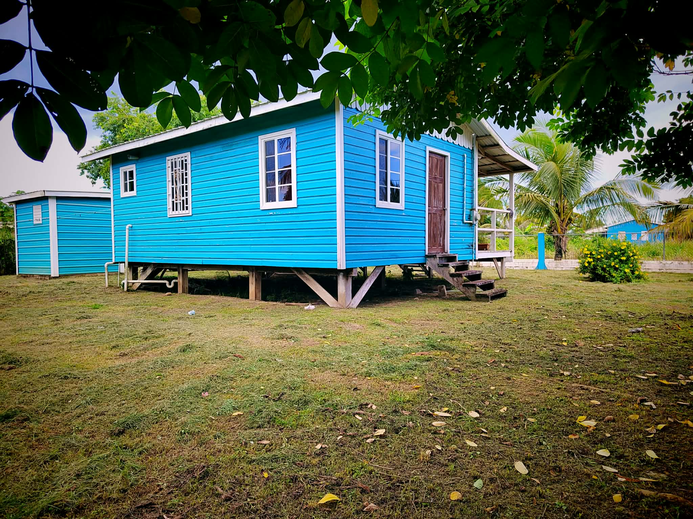
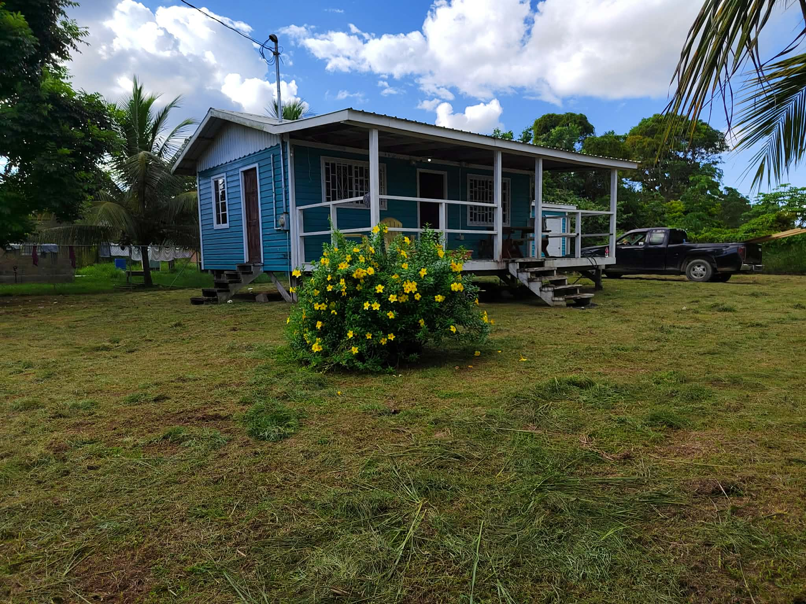
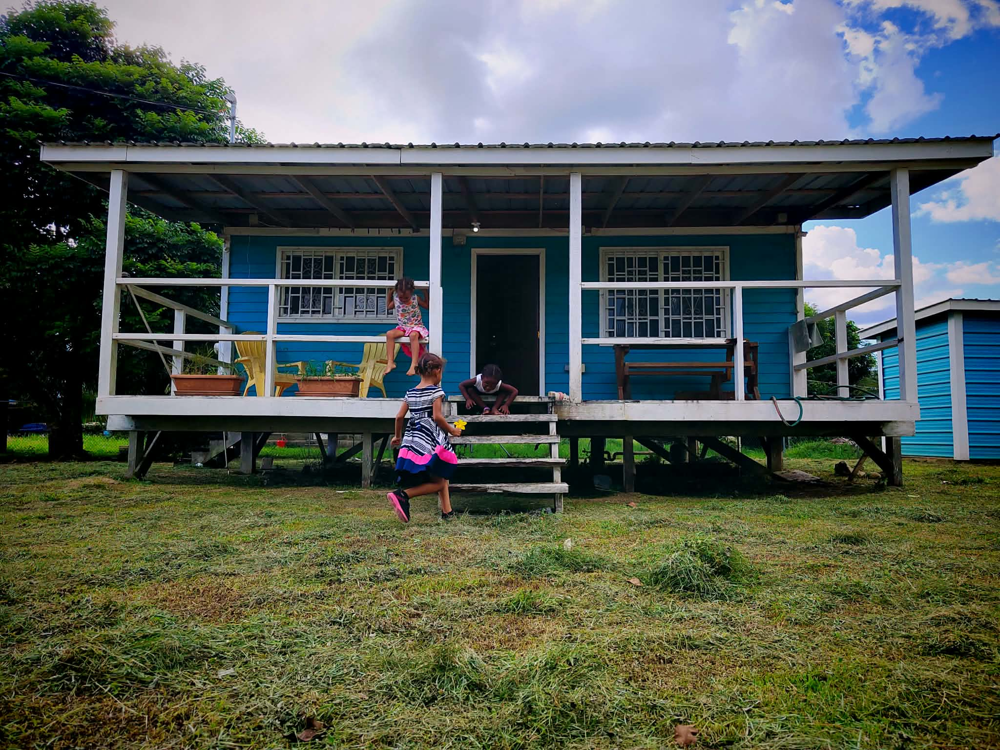
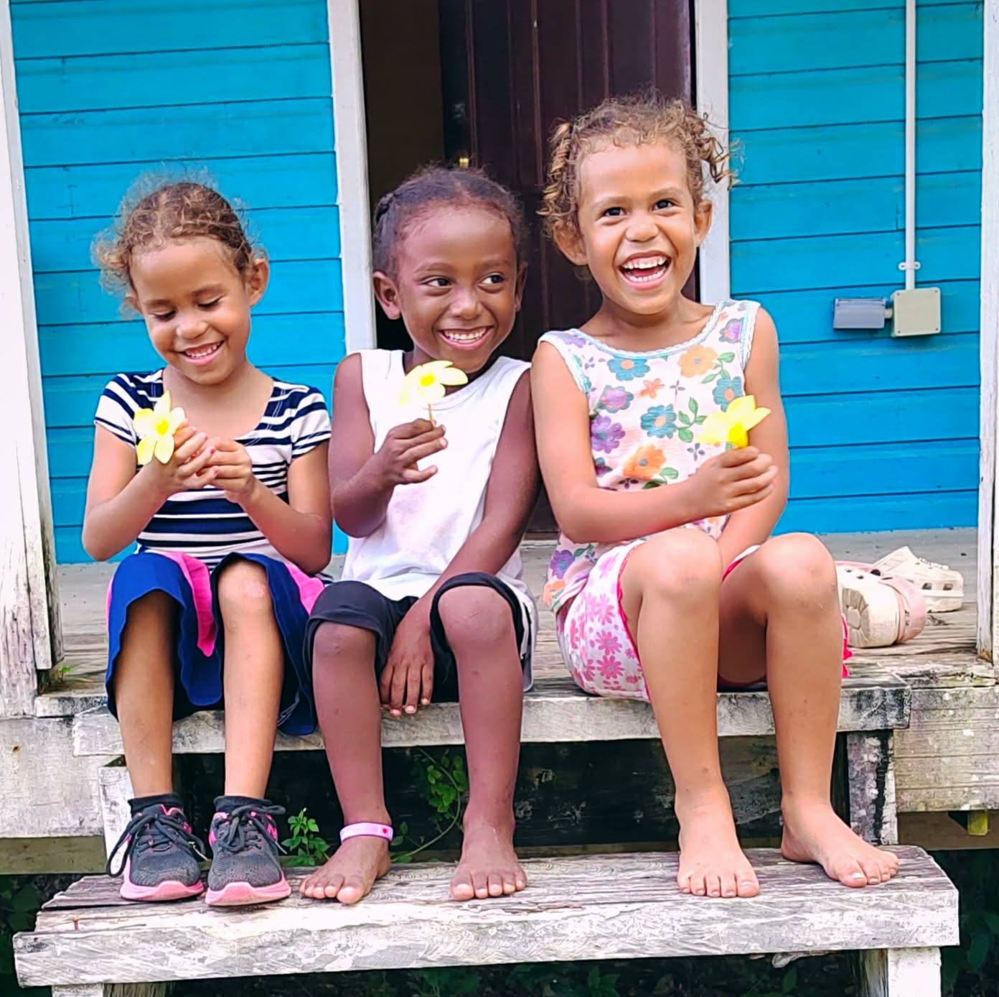
LEE BLUE POMONA · BELIZE
A private place to slow down, reconnect and experience the natural beauty of Belize at your own pace.
YOUR PRIVATE RETREAT
Perfect for couples, solo travellers and small families. The apartment features one bedroom, a comfortable living room, a kitchen, a bathroom with a toilet, and a washing machine. An additional air bed is available to accommodate up to two extra guests, making it a flexible option for a family of four.
Outside, guests can enjoy a large, fully fenced garden with video surveillance, offering extra peace of mind during their stay.
01–04 Maximum occupancy: 4 guests. One apartment · One transparent nightly rate
SEASONAL NIGHTLY RATES
Rates are for the entire apartment for 1–4 guests.
PLAN YOUR STAY
Choose your dates to receive an estimated accommodation price.
Thoughtful simplicity. A personal Belize experience.
Your estimate is not a reservation or confirmation of availability. Dates must be confirmed by the property.
YOUR STAY
Ready to make Southern Belize your next adventure?
CHECK DATES & PRICE